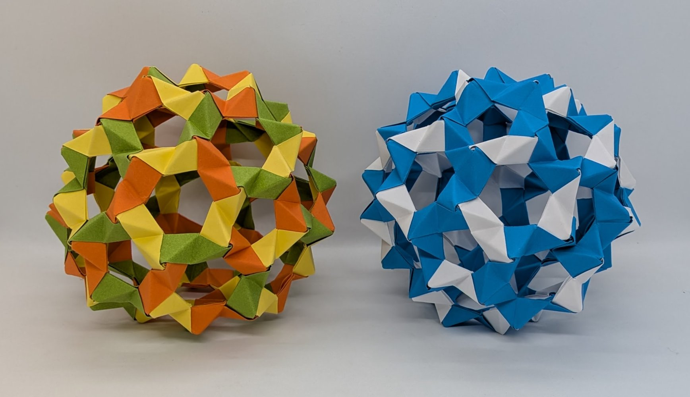

Gallery - Modular Origami
Modular origami has never really been my forte, but over the years I have come to appreciate it (and even enjoy it!), particularly alongside my studies in mathematics. This collection is a mixture of “classics” and “oddballs” that I have chanced upon over the years, and I hope it serves as a bit of a reference for those looking to get into modular origami. Models with a (*) incorporate (special) mathematical colourings, and for these I have attached pdfs with the pattern and a basic explanation.
... read more
Note: click on any of the pictures below for more information.

*
Model: Buckyball (90 PHiZZ units)
Designer: Thomas Hull
Diagrams (PHiZZ unit): Hull's website
Notes: Buckyball colourings
Designer: Thomas Hull
Diagrams (PHiZZ unit): Hull's website
Notes: Buckyball colourings


 - Robert Neale.jpg)
*
Model: Icosahedron (penultimate unit)
Designer: Robert Neale
Diagrams: Jim Plank's website
Notes: Transitive colouring
Designer: Robert Neale
Diagrams: Jim Plank's website
Notes: Transitive colouring

Model: Interlocking Cubes
Designer: Lewis Simon
Diagrams: Modular Origami Polyhedra (decoration box)
Designer: Lewis Simon
Diagrams: Modular Origami Polyhedra (decoration box)


Model: Sixteen Triangles
Designer: Byriah Loper
Diagrams: Mind-Blowing Modular Origami
Designer: Byriah Loper
Diagrams: Mind-Blowing Modular Origami

Model: Triangle Platonic Solids
Designer: Lewis Simon and Bennett Arnstein
Diagrams: Modular Origami Polyhedra (chain of four equilateral triangles module)
Designer: Lewis Simon and Bennett Arnstein
Diagrams: Modular Origami Polyhedra (chain of four equilateral triangles module)

Model: WXYZ and TUVWXYZ
Designers: Tung Ken Lam and Meenakshi Mukerji (resp.)
Diagrams (WXYZ): British Origami Society
Diagrams (TUVWXYZ): British Origami Society
Designers: Tung Ken Lam and Meenakshi Mukerji (resp.)
Diagrams (WXYZ): British Origami Society
Diagrams (TUVWXYZ): British Origami Society